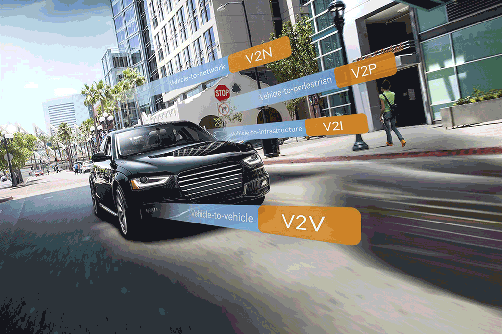
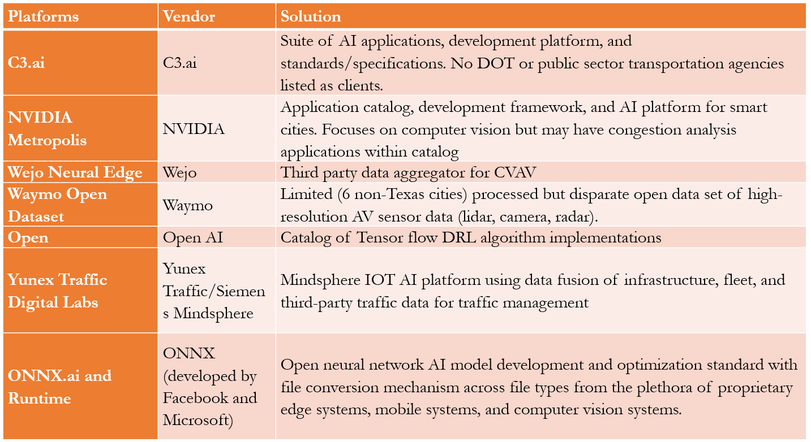

Disruptive Technologies and Transportation Infrastructure
CE 4361
Subasish Das, Ph.D.
Nov 6, 2023

Outline
- Overview
- Disruptive Technologies
- Impact on Infrastructure
- Case Studies
Overview
- Disruptive technologies
- Arrival of the 4th industrial revolution and the rapid development and fusion of multiple emerging and disruptive technologies in the recent years.
- Examples
- Artificial intelligence, big data and digitization
- Next generation wireless technologies (5G)
- Internet of Things (IoT)
- Connected and automated vehicles (CAV) technologies
- Mobility as a Service (MaaS)/Mobility on Demand (MOD)
- On-demand ride sharing services
- Advanced air mobility
Impact

Key Technologies
Automated Vehicles
- A vehicle incorporating vehicular automation, which is capable of sensing its environment and moving safely with little or no human input.
- USDOT's 'Ensuring American leadership in AV Technologies: AV 4.0' has three guiding principles:
- USG AV Principles
- Administration Efforts Supporting AV Technology Growth and Leadership
- USG Activities and Opportunities for Collaboration

Connected Vehicles
- A vehicle, which is capable in communicating bidirectionally with other systems outside of the vehicle.
- Private signals shared between the vehicles and with infrastructure generates big data about how, when, and where vehicles travel.
- This exciting new data-rich environment can be the genesis for a multitude of new applications.

Infrastructure Readiness
- Original equipment manufacturers (OEMs) and advanced driving assistance systems (ADAS) developers often maintain that no infrastructure enablers (except clean lane markings) are needed to achieve full AV deployment.
- For this reason, currently deployed AVs are limited to narrowly defined ODDs and may require human intervention at certain conditions.
- CAV ready infrastructure could speed the introduction of CAVs and ensure their safe operation under a wide variety of environmental conditions.

Electric Vehicles
- The use of CAVs and electromobility is promoted by the proliferation of next generation mobility.
- Around 9% of all new cars sold in 2023 so far have been EVs. This is more than a 120% increase compared to all of 2022. Vast majority of EV sales is made up of only 3 models (Tesla Model Y, Tesla Model 3, BYD Atto 3), representing over 68% of the EV market.
- Vehicle-to-grid (V2G), also known as Vehicle-to-home (V2H), describes a system in which plug-in electric vehicles (PEV) sell demand response services to the grid. Demand services are either delivering electricity or reducing their charging rate.
MaaS
- There is a growing demand for smart mobility solutions to reduce negative environmental, social, and economic externalities of private automobile travel.
- Mobility-as-a-Service (MaaS) is an integrated system that enables commuters to plan, book, and pay for trips with a range of mobility providers through a single online interface.
- MaaS has a unique characteristic to provide a system into which traditional transportation modes can be integrated with new service options.
Advanced Air Mobility
- Advanced air mobility (AAM) seeks to transform the method of everyday commute and is expected to operate in the imminent future.
- It is in the form of taxi service and works as an aerial on-demand transport for a single passenger or a small group of riders.
- This uncharted area in the emerging transportation world is expected to enable consumers to bypass traffic congestion in urban road networks.
How to make Infrastructure Ready for Disruptive Technologies
- Understand trends and patterns
- Conduct technology and associated risk assessment
- Adopt risk mitigation strategies
- Invest, update, and foster innovation
Key Data Technologies
- Artificial intelligence
- Big data and digitization
- Multi-source data fusion
- Cloud computing and other innovative computing
LLM, ChatGPT
Key Methodologies
Methods
- Statistical models
- Heterogeneity/Endogeneity models
- Causal models
- AI, and Explainable AI
Performance Measures
- Prediction accuracies
- Interpretability
- Big data usage
In-class Quiz
Which is the best modeling approach and why?
AI Platforms


Data Vendors
Data Fusion
Data Fusion
Case Study 1
USDOT Safety Data Initiative Rural Pilot Project
- Three States: North Carolina, Washington, and Ohio
- Three Databases
- Highway Safety Information System (HSIS)
- Highway Performance Monitoring System (HPMS)
- National Performance Management Research Data Set (NPMRDS)

Decision Support Tool
Live app link: https://ruralspeedsafety.shinyapps.io/rss_sdi
Case Study 2
TxDOT Rural Speed Safety Project
- Four Major Databases
- Road inventory data from RHiNO
- Traffic crash data from CRIS
- National Performance Management Research Data Set (NPMRDS)
- NOAA Dataset
- Years: 2016-2020
- Tool: Static
Decision Support Tool
Live app link: https://ruralspeedsafety.shinyapps.io/0_7051Tool_v2/
Case Study 3
TxDOT Urban Speed Safety Project (Ongoing)
- Six Major Databases
- Road inventory data from RHiNO
- Traffic crash data from CRIS
- NPMRDS
- INRIX XD and Wejo CV data
- NOAA Dataset
- Smart Location Database (SLD)
- Years: 2017-2022
- Tool: Data streaming available through cloud computing